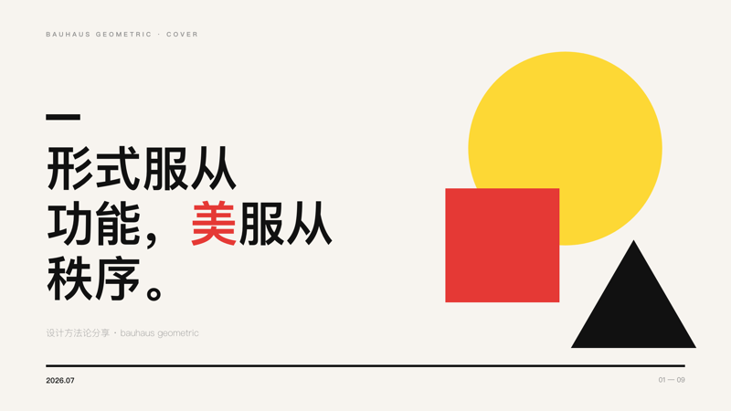
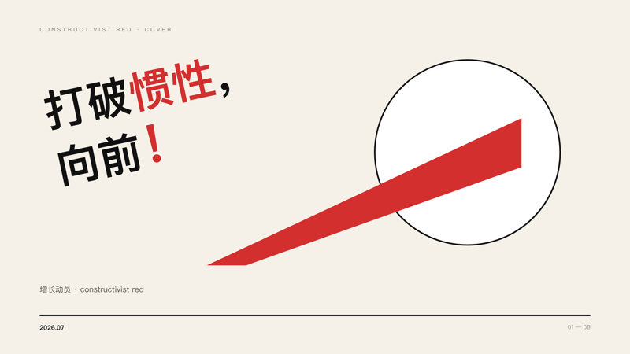
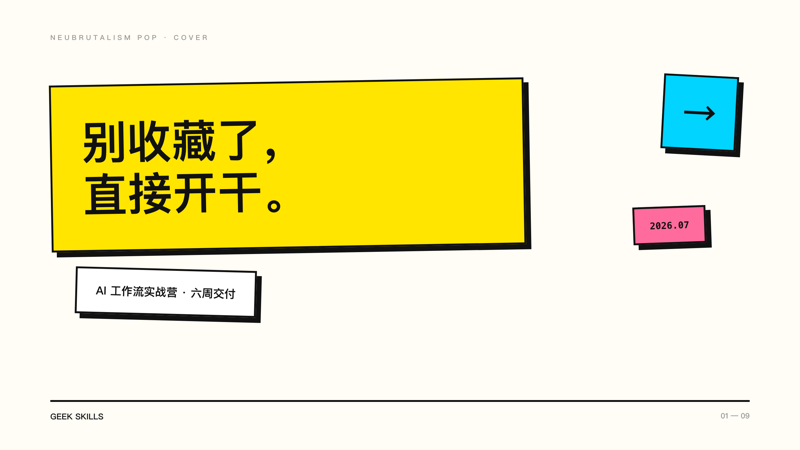
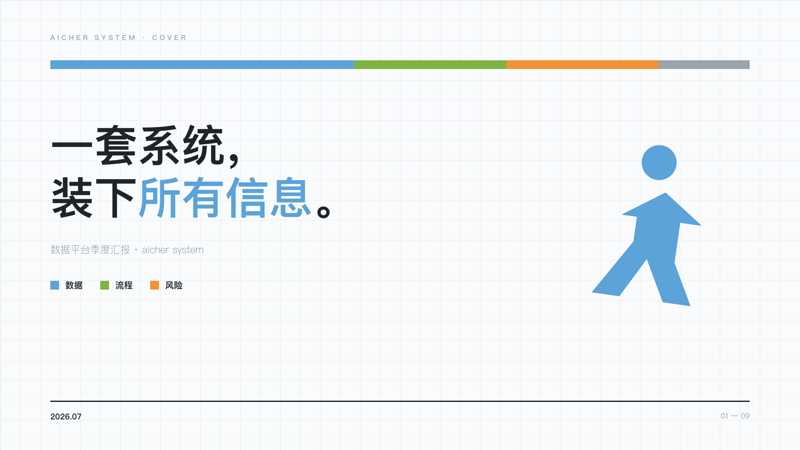

01
深度研究
Deep Research
先圈定问题和范围，再做多源检索、登记出处、核对引用。报告给结论、给依据，也写明白哪些地方靠不住。
使用 deep-research 比较三种适合客服团队的 RAG 架构开放 Agent Skills 规范 · 装在任何兼容的 Agent 上
13 个开源 Skill，把研究、产品决策、内容生产和系统维护的老练做法，写成 Agent 能执行的流程：步骤明确，节点可查，交付有格式。Claude Code 能用，任何认 Agent Skills 规范的客户端都能用。
每条主线都写清楚四件事：读什么材料，什么时候向你确认，按什么标准自查，做到哪一步必须停。
深度研究
先圈定问题和范围，再做多源检索、登记出处、核对引用。报告给结论、给依据，也写明白哪些地方靠不住。
使用 deep-research 比较三种适合客服团队的 RAG 架构决策拷问
grill-me-to-doc 先读你手头的材料，每轮只逼你定一件事，给推荐也给理由。中途断了能接着来；文档过了完整性门槛才输出 PRODUCT-DOC，批准这一步永远留给你。
使用 product-manager 的 grill-me-to-doc 模式梳理 AI 招聘产品演示文稿
不上来就排版。先把故事线定死，再逐页写 brief、套注册版式、出视觉稿，最后逐页自检画面。
使用 deck-studio 把这份季度复盘做成咨询风 PPT公众号流水线
文章、配图提示词、微信安全的内联 HTML，可以分步跑也可以一次跑通。提示词不等于成图，发布永远由你按键。
使用 wechat-article-writer full-pipeline 处理这些笔记git clone --depth 1 https://github.com/staruhub/ClaudeSkills.git
cd ClaudeSkills
python3 scripts/install_skill.py deep-research已安装到 ~/.agents/skills/deep-research
使用 deep-research 对比三个方案，给管理层写一份带引用的决策简报
想换别的：把 deep-research 改成 product-manager、deck-studio 或 wechat-article-writer。
只装到当前项目：加上 --project。用 python3 scripts/install_skill.py --list 查看全部短名。
其他客户端：Claude Code 用 --client claude-code 走原生目录；别的客户端怎么发现和调用，由宿主 Agent 自己定。
仓库里的真实产物证明它能做出什么；每项验证，只认自己查过的范围。




Deep Research 交报告前必须填满的骨架：结论、引用、取舍、局限，一项都不能空。
Product Manager 的交付格式：定了的决策、没定的问题、批准的边界，全部留痕。
已检查 13 个精选 Skill 的目录与结构合同。
边界 不等于 13 个都跑过真实业务 E2E。
已检查 10 个 Skill、91 条 schema 与冲突用例。
边界 不等于大模型真实执行时的路由准确率。
已检查 生成器、渲染页、量表、分数与已知问题。
边界 不等于独立第三方认证。
已检查 逐项列出读写、联网、命令、凭证和删除能力。
边界 不能替代你自己的组织策略审查。
python3 scripts/validate.py && python3 scripts/run_routing_evals.py && python3 scripts/validate_site.py装之前先看清
四条主线之外，还有编程、安全、架构、Three.js、PDF、销售和 AI 产品方法各一件。半成品一律待在 lab，不进这份名单。
prompt 用完就散。这里每个 Skill 是一个带版本的目录：SKILL.md 打底，需要时还有参考、脚本、schema 和失败用例。
不等于。四条主线有确定性契约测试，Deck 还过了真实 Chrome 渲染和 PPTX 组装；但模型发挥、生图服务、微信发布，都得你自己再验。
先确认客户端会扫 .agents/skills，不扫就用它的原生目录。安装脚本会去掉仓库前缀，Geek-skills-deck-studio 装完就叫 deck-studio。
先提 issue。新 Skill 在 lab/ 里长大，过了质量门禁和权限披露，才进精选名单。
提个 issue，带上脱敏的输入、输出和复现步骤；新 Skill 从 lab/ 开始。